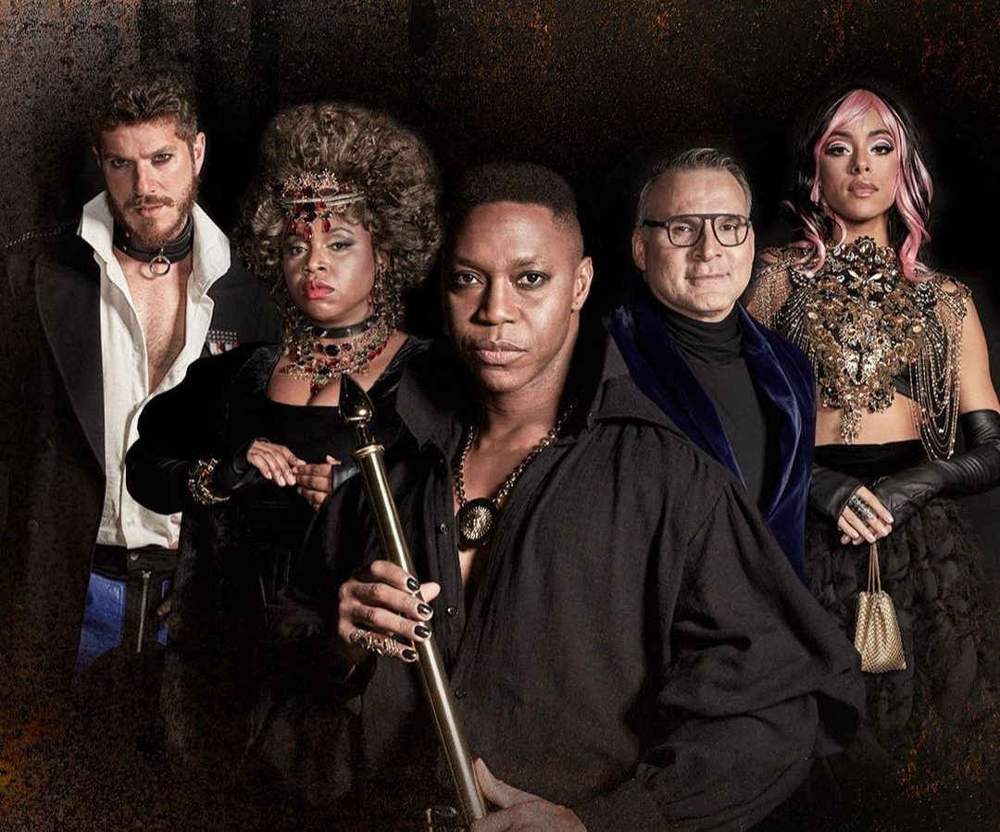

Última semana de “ IRON - O HOMEM DA MÁSCARA DE FERRO“ com Thiago Barbosa e Saulo Vasconcelos

O musical chegou as suas últimas cinco apresentações!
Uma releitura envolvente do clássico de Alexandre Dumas, "I R O N - O Homem da Máscara de Ferro", chega ao 033 RoofTop do Teatro Santander, no Complexo JK Iguatemi, oferecendo ao público uma experiência musical interativa em 360º. A adaptação, que transforma uma narrativa ficcional em uma história baseada em eventos reais na França sob o reinado autoritário de Luís XIV, se desenrola em meio a sociedades que buscam libertar-se do jugo de líderes mais preocupados com seus interesses pessoais do que com o bem da nação.
O palco se torna uma extensão do público, que, junto com o elenco, integra o cenário formado por módulos cenográficos dinâmicos. Estes, movidos pela participação do público, alteram-se ao longo da ação, quebrando as barreiras entre atores e espectadores. Em uma dinâmica de show ou festa, os participantes têm a liberdade de deslocar-se, interagir com os atores e aproveitar o bar, aberto durante todo o espetáculo.
No papel duplo do Rei e do Homem da Máscara de Ferro, Thiago Barbosa, renomado artista internacional e aclamado como 'o melhor Simba do mundo' na produção da Broadway "O Rei Leão", nas versões brasileira e espanhola. O enredo desenrola-se com um prisioneiro esquecido na Bastilha, cuja notável semelhança física com o Rei Luís XIV é obscurecida por uma máscara de ferro horripilante. Enquanto o prisioneiro aguarda sua chance de alterar o curso da história, o rei governa com desdém e arrogância, mais interessado em seus prazeres pessoais do que nos rumos da nação.
Os Três Mosqueteiros entram em cena com a missão de depor o rei negligente e substituí-lo pelo sósia encarcerado. Inicia-se, então, uma perigosa aventura para livrar a nação de um líder irresponsável e instaurar alguém genuinamente comprometido com o futuro do país.
FICHA TÉCNICA
IDEALIZAÇÃO: ULYSSES CRUZ, CAIO PADUAN E MARCOS DAUD
DIREÇÃO GERAL: ULYSSES CRUZ
LIBRETO: MARCOS DAUD
DIREÇÃO MUSICAL E PREPARAÇÃO VOCAL: JORGE DE GODOY
LETRAS E MÚSICAS ORIGINAIS: ELTON TOWERSEY
ARRANJOS: NATAN BADUE
DIREÇÃO MUSICAL ASSOCIADA: RAFAEL MARÃO
DIREÇÃO DE MOVIMENTO E COREOGRAFIAS: BÁRBARA GUERRA
ASSISTENTE DE MOVIMENTO/COREOGRAFIAS E DIRETOR RESIDENTE: JOHNNY CAMOLESE
ELENCO / PERSONAGEM:
THIAGO BARBOSA - Luís XIV e Philipp (Homem da Máscara de Ferro)
LETICIA SOARES - Ana D’Áustria
CAIO PADUAN - D’Artagnan
SAULO VASCONCELOS - Restiff - O Mestre de Cerimônias
YARA CHARRY - Louise
LIVIAN ARAGÃO - Jean Baptiste Lully
TOBIAS DA VAI-VAI - Alexandre Dumas - o autor
Dagoberto Feliz - Aramis
Daniel Haidar - Raoul / Molière
Débora Polistchuck - Mme. Dubois
Gabriela Correa - Armande
Luiz Nicolau - Athos
Nicolas Ahnert - Colbert / Carcereiro
Rafael de Castro - Porthos
Rafael Leal - Nicolas Fouquet
MÚSICOS: Rafael Marão (regente e pianista), Viviane Franco (pianista), Bruno Galhardi (baterista), Gibson Freitas (baixista), Lucas Fragiacomo (guitarrista), Pedro Abujamra (pianista)
DIREÇÃO DE ELENCO: VANESSA VEIGA
DIREÇÃO CRIATIVA | CENÁRIO | FIGURINO: PAZETTO
PRODUÇÃO DE FIGURINO: CAIA GUIMARÃES
EXECUÇÃO DE CENOGRAFIA: FCR
DIREÇÃO DE PALCO: FERNANDO NIETZCHE
VISAGISMO: ANDERSON BUENO
ILUMINADOR: CAETANO VILELLA
ILUMINADOR ASSISTENTE: NICOLAS CARATORI
SOUND DESIGN: BREDA
DIREÇÃO DE ARTE: MARCIO RIBAS
PATROCÍNIO MASTER: SANTANDER BRASIL
COORDENAÇÃO DE PROJETO: FIORAVANTE ALMEIDA
COORDENAÇÃO DE PRODUÇÃO: CAMILA BEVILAQUA
PRODUÇÃO EXECUTIVA: MARCELO CHAFFIM
DIREÇÃO EXECUTIVA: THIAGO DE LOS REYES
REDES SOCIAIS: 1812 COMUNICAÇÃO
ASSESSORIA DE IMPRENSA: JSPONTES COMUNICAÇÃO - JOÃO PONTES E STELLA STEPHANY
PRODUTORAS ASSOCIADAS: FLO ARTS E ULYSSES CRUZ ARTE E ENTRETENIMENTO